Sobre
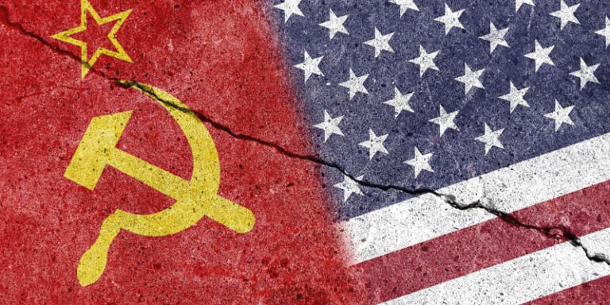
Foi uma disputa com ideológico combatida por duas facções antagônicas: Estados Unidos, capitalista, e União Soviética, socialista. Teve início em 1947, quando o presidente norte-americano Henry Truman decretou medidas econômicas, sociais e políticas para frustrar o avanço da influência socialista na Europa, ocasionando na formação grandes blocos de alianças polarizadas — a Otan, na Europa Ocidental, e o Pacto Varsóvia, na Europa Oriental.
Apesar a maioria dos Estados estar diretamente ligada a uma dessas alianças no continente europeu, grande parte do mundo se alinhou politicamente a uma dessas potências, o que gerou inúmeros golpes Estado, ditaduras militares, guerras e revoluções por toda Ásia, África e América.
Essa guerra também foi marcada pela constante ameaça de uma guerra nuclear, a corrida espacial e uma intensa disputa com espionagem, chegando a seu fim apenas início da década 1990, com o desmantelamento da União Soviética.
Voltar para o inícioO que foi?
Ocorrida entre 1947 e 1991, foi um conflito indireto entre duas potências ideologicamente opostas: a União Soviética, responsável pela disseminação do socialismo, e os Estados Unidos, que propagaram o capitalismo. A disputa por influência ideológica, enfaticamente investida pelas respectivas potências antagônicas, resultou em uma polarização sociopolítica proporções globais, acirrando as chances do inicio para uma guerra nuclear.
Apesar do confronto aberto e direto entre soviéticos e norte-americanos nunca ter acontecido, foi responsável por transformar profundamente a história do mundo ao propiciar conflitos secundários, revoluções, ditaduras militares, guerras civis e avanços nas tecnologias de uso tanto bélico quanto civil.
Voltar para o inícioContexto Histórico
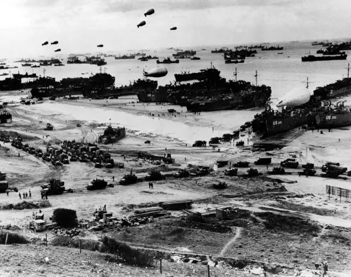
Conforme muitos historiadores apontam, as bombas atômicas que arrasaram as cidades japoneses Hiroshima e Nagasaki, em 1945, não serviram apenas para forçar a rendição japonesa na Segunda Guerra Mundial; pelo contrário, elas tinham outro objetivo: intimidar os rivais ideológicos dos Estados Unidos, ou seja, os socialistas representados pela União Soviética.
Apesar ambos os países combaterem os nazistas na Segunda Guerra Mundial, o sentimento mútuo de desconfiança ideológica entre soviéticos e grande parte do Ocidente advinha de antes..
Mais especificamente, a fobia pelo socialismo era tanta, por parte das potências capitalistas como a Inglaterra e os Estados Unidos, que nem mesmo o nazismo preocupava tanto os seus governantes. Isso explica por que os futuros Aliados do Ocidente permitiram que Hitler se fortalecesse, afinal, a Alemanha Nazista parecia ser uma potencial parceira para combate ao socialismo soviético, além que configurava uma barreira “natural” entre Leste e Oeste europeus.
A divisão geográfica que “empurrou” os nazistas volta para a Alemanha influenciou profundamente o que viria a ser a esse conflito, porque, além combater o Reich, o antagonismo ideológico entre capitalistas e socialistas significava também capturar protótipos de armamentos, recrutar cientistas aliados e dominar os territórios outrora conquistados pelos alemães.
Por isso, ao término da Segunda Guerra Mundial, a Europa já se encontrava praticamente dividida em duas partes: uma capitalista, a Oeste, e outra socialista, a Leste. A Alemanha foi igualmente dividida em Ocidental (capitalista) e Oriental (socialista).
Entretanto, o conflito só se iniciou no ano de 1947, quando o presidente estadunidense Harry Truman apresentou a Doutrina Truman ao Congresso do país. Esse documento expunha uma declaração combate à ideologia comunista por meio da disseminação, do investimento e reformas do capitalismo em todos os países europeus sob sua influência, algo que resultou, em 1949, na criação da Otan (Organização do Tratado do Atlântico Norte).
Como resposta à aliança formada pelos capitalistas, em 1955, o primeiro-secretário soviético Nikita Khrushchev aprovou o Pacto Varsóvia, angariando Estados clientes e Estados satélites em todo o Leste Europeu, além receber o apoio e o alinhamento para diversas nações extracontinentais. Enquanto a chamada Cortina Ferro separava a Europa em dois blocos antagônicos, o restante do mundo servia palco para a influência ambas as potências beligerantes.
Voltar para o inícioCausas
As causas remetem à recíproca desconfiança que ambos os antigos Aliados da Segunda Guerra Mundial — os Estados Unidos e a União Soviética — fomentaram após o término deste confronto. A partir da década de 1940, grande parte dos Estados ocidentais passou a enxergar o comunismo como um perigo às convicções neoliberalistas praticadas por seus governos, e, com isso, em 1947, o presidente norte-americano Harry Truman passou a expor medidas para evitar a influência socialista em seu país e nos países com quem os EUA mantinham parcerias comerciais.
Essas medidas, configuradas pela Doutrina Truman e o Plano Marshall, deram início à Guerra Fria por iniciarem um processo polarização sociopolítica. Um lado, a Otan defendia os interesses do capitalismo, enquanto o Pacto Varsóvia aderia à ideologia socialista. Os Estados clientes, no entanto, não foram os únicos a tomarem lados; as influências ambas as potências rivais foram exercidas impetuosamente em todo o mundo, angariando alinhamentos políticos favoráveis tanto aos Estados Unidos quanto à União Soviética.
Deve-se também ao início da Guerra Fria a distribuição das nações beligerantes sobre a Europa a partir do ano 1945. Nesse ano, os Estados Unidos e a União Soviética não estarem ainda em confronto, a desconfiança mútua resultada das discrepâncias ideológicas só se intensificou a partir do colapso do nazismo: enquanto o Leste Europeu estava dominado pelos soviéticos, o Oeste do continente estava tomado pelos Aliados ocidentais.
Voltar para o inícioCaracterísticas
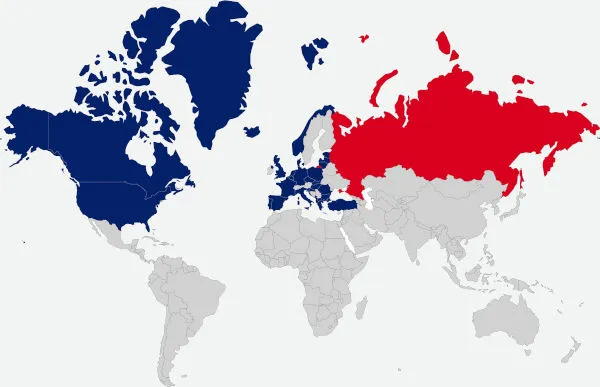
Polarização política
Após a Segunda Guerra Mundial, a influência socialista pelo Leste Europeu e a capitalista, pelo Oeste, levaram a maioria dos países a aderirem a um desses modelos sociopolíticos instaurados pelas facções rivais, tanto maneira voluntária quanto forçadamente.
Esses países poderiam compor a Otan, capitalista, o Pacto Varsóvia, socialista, o alinhamento referente a uma das ideologias rivais, ou, em alguns casos (como Índia e Áustria), a neutralidade, apesar da insistência em se influenciar ideologicamente esses países, por parte ambas as potências, por meio da espionagem e propaganda.
A polarização mundial entre capitalismo e socialismo foi tão impactante que não apenas a Alemanha foi dividida em duas partes, como também a sua capital, Berlim, que foi literalmente separada por meio da construção um muro — o Muro Berlim.
Conflito indireto
As nações rivais nunca se confrontaram abertamente; pelo contrário, investiram, de diversas formas, na influência suas respectivas ideologias ao redor do mundo, angariando Estados clientes ou governos alinhados conforme os seus devidos modelos socioeconômicos. Essas influências resultaram em diversas consequências, como revoluções, a instauração de ditaduras, guerras civis e até mesmo entre países. O motivo de as potências beligerantes nunca terem entrado em conflito direto será mais bem explicado no tópico abaixo.
Ameaça nuclear
Foi fundamentada essencialmente em uma constante ameaça nuclear. Tanto os EUA quanto a URSS detinham inúmeros mísseis, o que significava que, a partir do momento que uma dessas facções realizasse um ataque nuclear, a outra imediatamente retaliaria com as ogivas seu arsenal. Por isso também assimilada a uma guerra de dissuasão, ou seja, um confronto que dissuadia uma potência à outra de lançar ataques diretos ou em grandes proporções — algo que, do contrário, resultaria em uma hecatombe nuclear e a possível extinção da vida humana na Terra.
Espionagem
Criaram-se agências espionagem norte-americana e soviética que tinham como objetivo desde a coleta informações até o assassinato de alvos. Essas agências foram representadas pela CIA (Central Intelligence Agency) norte-americana e pela KGB (Komitet Gosudarstvennoy Bezopasnosti) soviética, algo que influenciou fortemente na produção produtos da indústria cultural, como longas-metragens James Bond.
Corrida espacial
Ambas as facções investiram em tecnologia espacial, o que resultou em uma disputa conquistas relacionadas à fabricação de foguetes, satélites e outros dispositivos que resultassem em explorações cada vez mais profundas do espaço. Tanto o EUA quanto a URSS obtiveram conquistas nessa corrida: enquanto soviéticos lançaram o primeiro satélite artificial (1957) e o primeiro astronauta ao espaço (1961), norte-americanos foram primeiros a pousarem na Lua (1969).
O motivo dessa disputa não era aleatório: a dominação da tecnologia aeroespacial significava a predominação da ciência balística, que estava indissociavelmente ligada à fabricação mísseis longo alcance.
Corrida armamentista
Grande parte do que foi projetado pelos alemães para conduzir contra os Aliados na Segunda Guerra Mundial acabou sendo, quando não destruída, capturada e reaproveitada tanto por norte-americanos quanto por soviéticos: aviões invisíveis ao radar, mísseis longo alcance, submarinos elétricos e até mesmo a bomba nuclear acabaram sendo apropriados pelas potências rivais.
No entanto, muitas das invenções aproveitadas na Guerra Fria teriam, futuramente, uso civil, como a internet, o GPS, o micro-ondas e o computador moderno.
Voltar para o inícioGaleria Guerra Fria
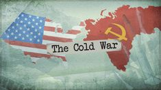
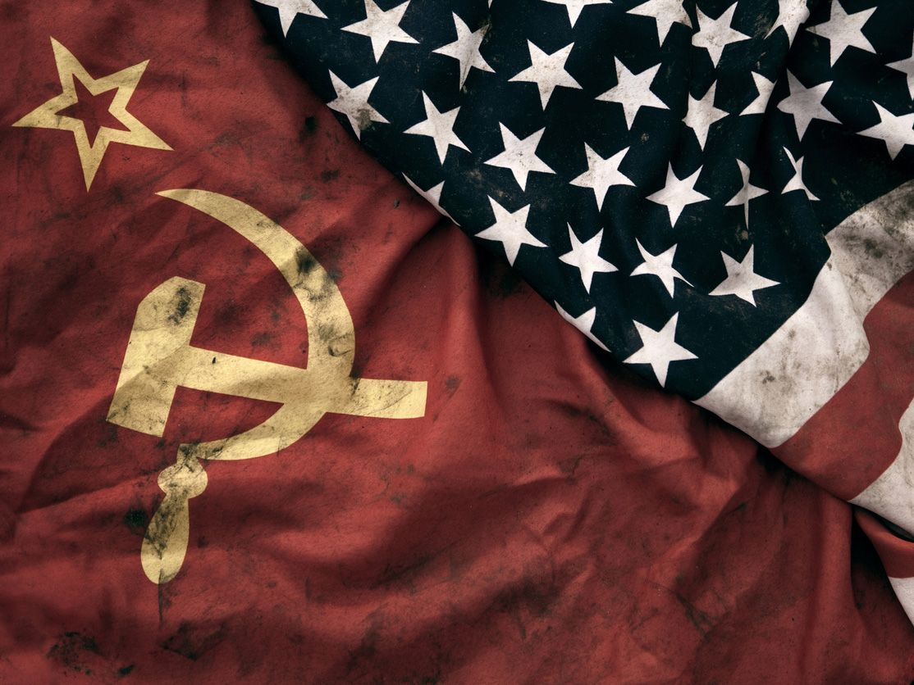
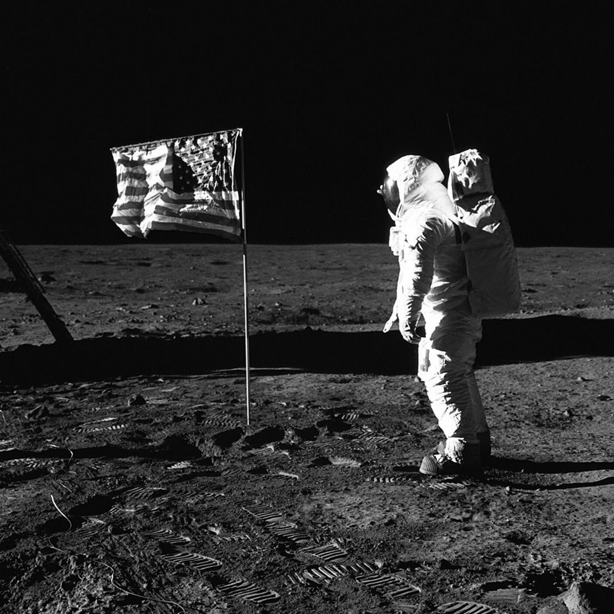
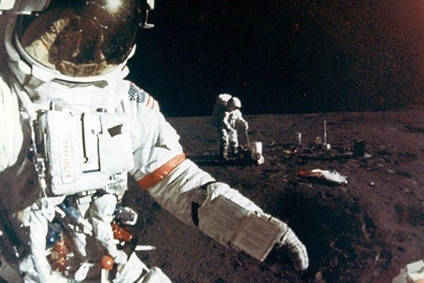
Referência: https://br.pinterest.com
Voltar para o inícioSaiba mais!
Voltar para o inícioMosaico Guerra Fria
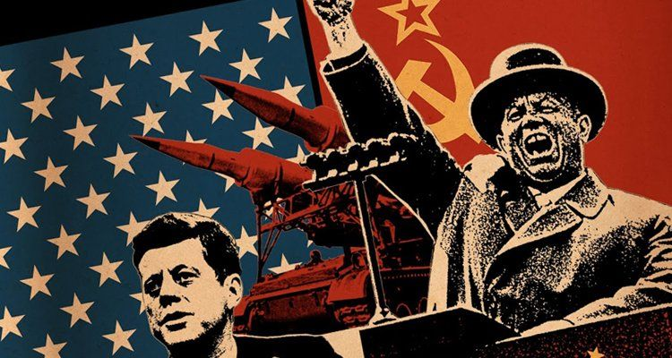
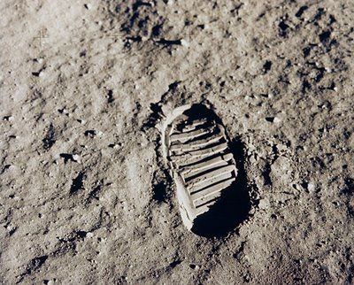
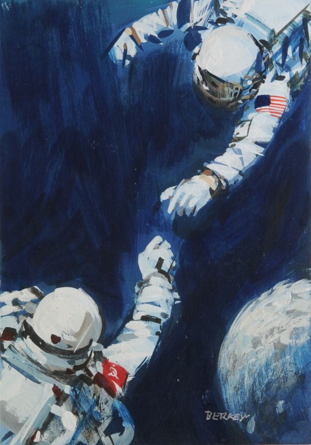
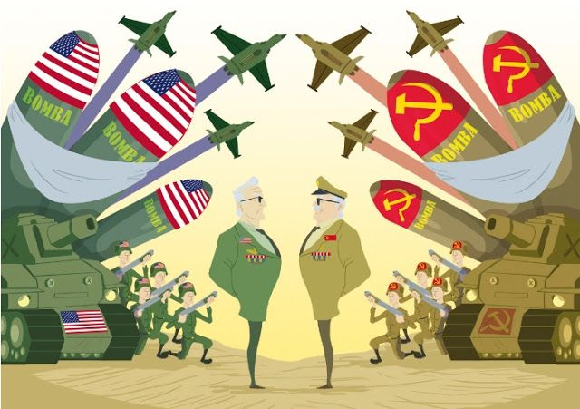
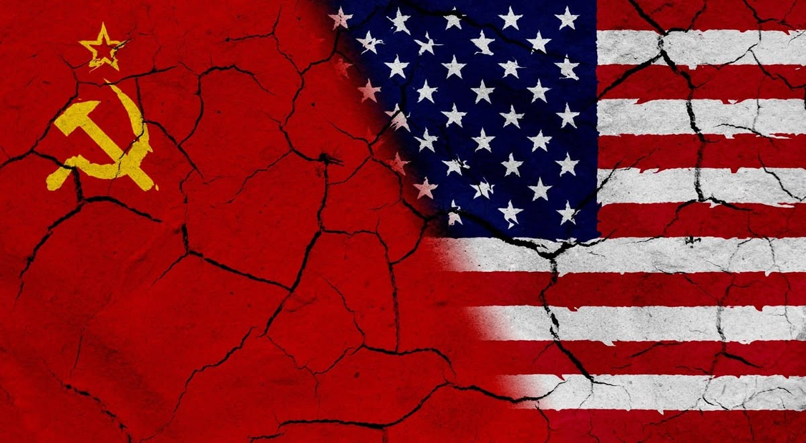